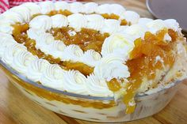

Pave de Abacaxi

Ingredientes
- 1 lata de leite condensado
- 1 xícara de suco de abacaxi fresco ou congelado
- 1 envelope de gelatina sem sabor (12g)
- 1 xícara de creme de leite fresco
- 1 colher de sopa de açúcar
- 1 colher de sopa de suco de limão
- 1 caixa de biscoito champanhe ou maisena
- Abacaxi fresco picado para decorar
Modo de preparo
- Dissolva a gelatina em 1/2 xícara de água quente.
- Misture o leite condensado, o suco de abacaxi, o açúcar e o suco de limão.
- Adicione a gelatina dissolvida e misture bem.
- Bata o creme de leite até ficar firme.
- Misture o creme de leite à mistura de abacaxi.
- Forre um recipiente com biscoitos.
- Despeje a mistura de abacaxi.
- Repita as camadas de biscoitos e mistura.
- Decore com abacaxi picado.
- Leve à geladeira por pelo menos 3 horas.